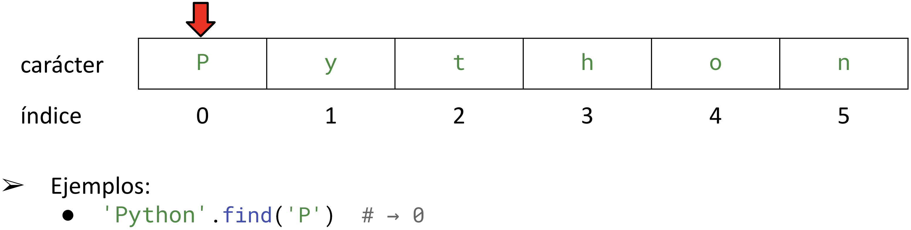
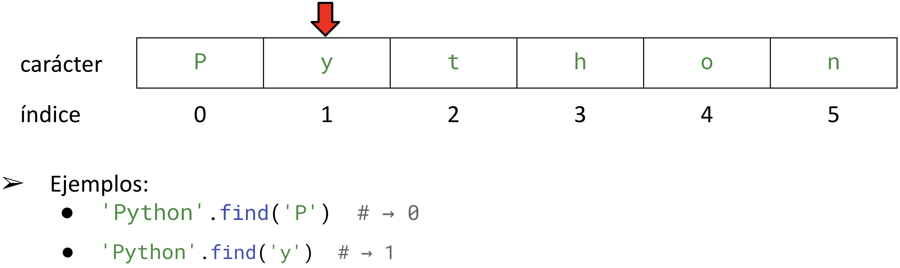
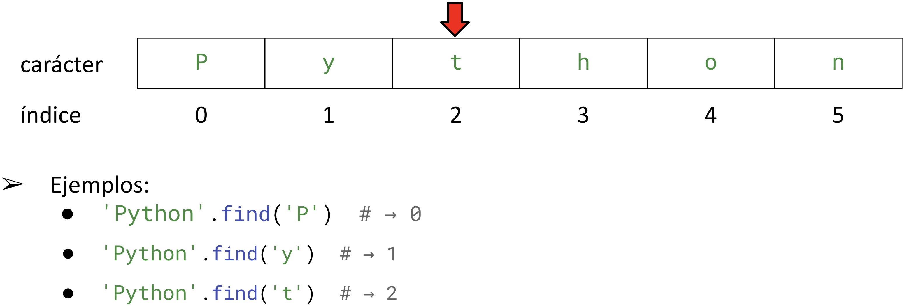
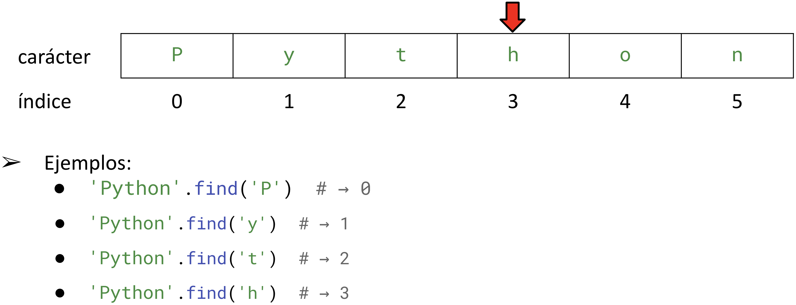
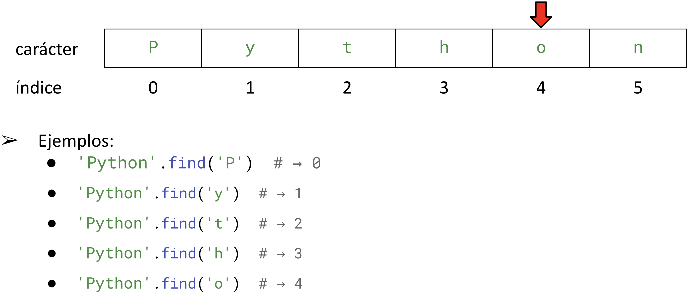
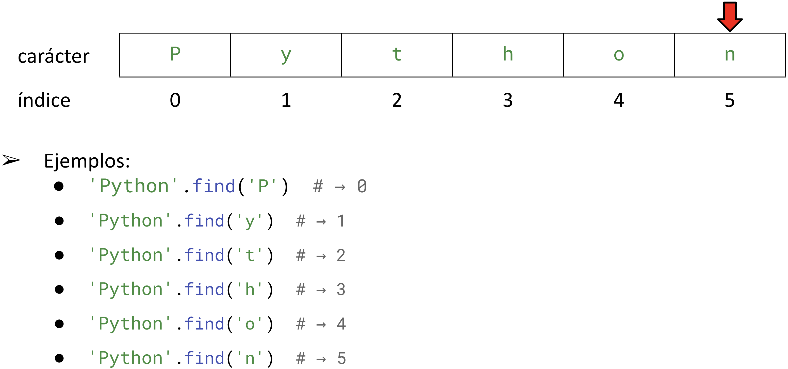

<!DOCTYPE html>
<html lang="en">
  <head>
    <meta charset="utf-8" />
    <meta name="viewport" content="width=device-width, initial-scale=1.0, maximum-scale=1.0, user-scalable=no" />

    <title></title>
    <link rel="stylesheet" href="dist/reveal.css" />
    <link rel="stylesheet" href="dist/theme/iph.css" id="theme" />
    <link rel="stylesheet" href="plugin/highlight/spyder.css" />
	<link rel="stylesheet" href="css/layout.css" />
	<link rel="stylesheet" href="plugin/customcontrols/style.css">


    <script defer src="dist/fontawesome/all.min.js"></script>

	<script type="text/javascript">
		var forgetPop = true;
		function onPopState(event) {
			if(forgetPop){
				forgetPop = false;
			} else {
				parent.postMessage(event.target.location.href, "app://obsidian.md");
			}
        }
		window.onpopstate = onPopState;
		window.onmessage = event => {
			if(event.data == "reload"){
				window.document.location.reload();
			}
			forgetPop = true;
		}

		function fitElements(){
			const itemsToFit = document.getElementsByClassName('fitText');
			for (const item in itemsToFit) {
				if (Object.hasOwnProperty.call(itemsToFit, item)) {
					var element = itemsToFit[item];
					fitElement(element,1, 1000);
					element.classList.remove('fitText');
				}
			}
		}

		function fitElement(element, start, end){

			let size = (end + start) / 2;
			element.style.fontSize = `${size}px`;

			if(Math.abs(start - end) < 1){
				while(element.scrollHeight > element.offsetHeight){
					size--;
					element.style.fontSize = `${size}px`;
				}
				return;
			}

			if(element.scrollHeight > element.offsetHeight){
				fitElement(element, start, size);
			} else {
				fitElement(element, size, end);
			}		
		}


		document.onreadystatechange = () => {
			fitElements();
			if (document.readyState === 'complete') {
				if (window.location.href.indexOf("?export") != -1){
					parent.postMessage(event.target.location.href, "app://obsidian.md");
				}
				if (window.location.href.indexOf("print-pdf") != -1){
					let stateCheck = setInterval(() => {
						clearInterval(stateCheck);
						window.print();
					}, 250);
				}
			}
	};


        </script>
  </head>
  <body>
    <div class="reveal">
      <div class="slides"><section  data-markdown><script type="text/template"><!-- .slide: class="has-light-background drop" data-background-color="#f8f8f8" -->
<div class="" style="position: absolute; left: 0px; top: 0px; height: 700px; width: 960px; min-height: 700px; display: flex; flex-direction: column; align-items: center; justify-content: center" absolute="true">

### <i class="fas fa-award"></i> IP Honores

 ####  *Laboratorio 2 de Nivel 2 - N2-L2*

[Eduardo Rosales](mailto:ee.rosales24@uniandes.edu.co)

Departamento de Ingeniería de Sistemas y Computación

Universidad de los Andes
</div></script></section><section  data-markdown><script type="text/template"><!-- .slide: class="has-light-background drop" data-background-color="#f8f8f8" -->
<div class="" style="position: absolute; left: 0px; top: 0px; height: 700px; width: 960px; min-height: 700px; display: flex; flex-direction: column; align-items: center; justify-content: center" absolute="true">

### Instrucciones generales

- **Objetivos**
	- Afianzar la comprensión de los strings, sus operaciones
	
<br>

- **¿Preguntas?**
	- Formule su pregunta de forma **muy clara y concisa**
		- Luego (**y solo luego de esto**)
			- Levante la mano
</div></script></section><section  data-markdown><script type="text/template"><!-- .slide: class="has-light-background drop" data-background-color="#f8f8f8" -->
<div class="" style="position: absolute; left: 0px; top: 0px; height: 700px; width: 960px; min-height: 700px; display: flex; flex-direction: column; align-items: center; justify-content: center" absolute="true">

#  Actividad I

- **Objetivos:**
	- Conocer más métodos de los strings
</div></script></section><section  data-markdown><script type="text/template"><!-- .slide: class="has-light-background drop" data-background-color="#f8f8f8" -->
<div class="" style="position: absolute; left: 0px; top: 0px; height: 700px; width: 960px; min-height: 700px; display: flex; flex-direction: column; align-items: center; justify-content: center" absolute="true">

### Lea cuidadosamente la documentación de los siguientes métodos de `str`
</div></script></section><section  data-markdown><script type="text/template"><!-- .slide: class="has-light-background drop" data-background-color="#f8f8f8" -->
<div class="" style="position: absolute; left: 0px; top: 0px; height: 700px; width: 960px; min-height: 700px; display: flex; flex-direction: column; align-items: center; justify-content: center" absolute="true">

### `str.lower()`

- Retorna una copia del string original 
	- En minúsculas 
- Se usa para hacer comparaciones 
	- Sin importar mayúsculas y minúsculas
- Ayuda:  [str.lower](https://docs.python.org/3/library/stdtypes.html#str.lower)
</div></script></section><section  data-markdown><script type="text/template"><!-- .slide: class="has-light-background drop" data-background-color="#f8f8f8" -->
<div class="" style="position: absolute; left: 0px; top: 0px; height: 700px; width: 960px; min-height: 700px; display: flex; flex-direction: column; align-items: center; justify-content: center" absolute="true">

### `str.lower()` - Ejemplos

```Python
'abcd'.lower()  # → 'abcd'

'ABCD'.lower()  # → 'abcd'

''.lower()  # → '' (String vacíos permanecen sin cambios)

'ABCD#%'.lower()  # → 'abcd#%': los símbolos no son afectados

'XYZ'.lower() == 'xyz'  # → True
```
</div></script></section><section  data-markdown><script type="text/template"><!-- .slide: class="has-light-background drop" data-background-color="#f8f8f8" -->
<div class="" style="position: absolute; left: 0px; top: 0px; height: 700px; width: 960px; min-height: 700px; display: flex; flex-direction: column; align-items: center; justify-content: center" absolute="true">

### `str.upper()`

- Retorna una copia del string original
	- En mayúsculas 
- Se usa para hacer comparaciones 
	- Sin importar mayúsculas o minúsculas
- Ayuda:  [str.upper](https://docs.python.org/3/library/stdtypes.html#str.upper)
</div></script></section><section  data-markdown><script type="text/template"><!-- .slide: class="has-light-background drop" data-background-color="#f8f8f8" -->
<div class="" style="position: absolute; left: 0px; top: 0px; height: 700px; width: 960px; min-height: 700px; display: flex; flex-direction: column; align-items: center; justify-content: center" absolute="true">

### `str.upper()` - Ejemplos

```Python
'ABCD'.upper()  # → 'ABCD'

'abcd'.upper()  # → 'ABCD'

''.upper()  # → '' (String vacíos permanecen sin cambios)

'abcd&'.upper()  # → 'ABCD&' (Los símbolos no son afectados)

'xyz'.upper() == 'XYZ'  # → True
```
</div></script></section><section  data-markdown><script type="text/template"><!-- .slide: class="has-light-background drop" data-background-color="#f8f8f8" -->
<div class="" style="position: absolute; left: 0px; top: 0px; height: 700px; width: 960px; min-height: 700px; display: flex; flex-direction: column; align-items: center; justify-content: center" absolute="true">

### `str.title()`

- Retorna una copia del string original 
	- En formato de _título_:
		- La primera letra en mayúscula
			- El resto en minúsculas
- Se usa para formatear títulos y encabezados
- Ayuda: [str.title](https://docs.python.org/3/library/stdtypes.html#str.title)
</div></script></section><section  data-markdown><script type="text/template"><!-- .slide: class="has-light-background drop" data-background-color="#f8f8f8" -->
<div class="" style="position: absolute; left: 0px; top: 0px; height: 700px; width: 960px; min-height: 700px; display: flex; flex-direction: column; align-items: center; justify-content: center" absolute="true">

### `str.title()` - Ejemplos


```Python
'ab cd'.title()  # → 'Ab Cd' (Sólo iniciales afectadas)

'python is fun'.title()  # → 'Python Is Fun'

'PYTHON IS FUN'.title()  # → 'Python Is Fun'

''.title()  # → '' (Strings vacíos permanecen sin cambios)

'HI jOHN&'.title()  # → 'Hi John&' (Los símbolos no se afectan)

```
</div></script></section><section  data-markdown><script type="text/template"><!-- .slide: class="has-light-background drop" data-background-color="#f8f8f8" -->
<div class="" style="position: absolute; left: 0px; top: 0px; height: 700px; width: 960px; min-height: 700px; display: flex; flex-direction: column; align-items: center; justify-content: center" absolute="true">

### `str.swapcase()`
    
- Retorna una copia del string original 
	- Con mayúsculas convertidas a minúsculas y viceversa
- Ayuda: [str.swapcase](https://docs.python.org/3/library/stdtypes.html#str.swapcase)
</div></script></section><section  data-markdown><script type="text/template"><!-- .slide: class="has-light-background drop" data-background-color="#f8f8f8" -->
<div class="" style="position: absolute; left: 0px; top: 0px; height: 700px; width: 960px; min-height: 700px; display: flex; flex-direction: column; align-items: center; justify-content: center" absolute="true">

### `str.swapcase()` - Ejemplos
   

```Python
'abCD'.swapcase()  # → 'ABcd' (Cambia mayúsculas por minúsculas y viceversa)  

'Python Is Fun'.swapcase()  # → 'pYTHON iS fUN'

'PYTHON IS FUN'.swapcase()  # → 'python is fun'

''.swapcase()  # → '' (String vacíos permanecen sin cambios)

'123abc'.swapcase()  # → '123ABC' (Los dígitos permanecen sin cambios)

```
</div></script></section><section  data-markdown><script type="text/template"><!-- .slide: class="has-light-background drop" data-background-color="#f8f8f8" -->
<div class="" style="position: absolute; left: 0px; top: 0px; height: 700px; width: 960px; min-height: 700px; display: flex; flex-direction: column; align-items: center; justify-content: center" absolute="true">

### `str.count()`

- Retorna el número de ocurrencias (`int`)
	- De un substring dado
- Sintaxis: 
```Python
string.count(substring, start, end)
```
- `substring`: Substring que se busca
- `start`: Inicio de búsqueda (opcional: `0`)
- `end`: Fin de búsqueda (opcional: Fin del string)
- Retorna `0`  si no encuentra el substring
- Ayuda:  [str.count](https://docs.python.org/3/library/stdtypes.html#str.count)
</div></script></section><section  data-markdown><script type="text/template"><!-- .slide: class="has-light-background drop" data-background-color="#f8f8f8" -->
<div class="" style="position: absolute; left: 0px; top: 0px; height: 700px; width: 960px; min-height: 700px; display: flex; flex-direction: column; align-items: center; justify-content: center" absolute="true">

### `str.count()` - Ejemplos

```Python
'banana'.count('a')  # → 3

'ban ana'.count('a')  # → 3

'banana'.count('z')  # → 0
```
</div></script></section><section  data-markdown><script type="text/template"><!-- .slide: class="has-light-background drop" data-background-color="#f8f8f8" -->
<div class="" style="position: absolute; left: 0px; top: 0px; height: 700px; width: 960px; min-height: 700px; display: flex; flex-direction: column; align-items: center; justify-content: center" absolute="true">

### `str.find()` (1/2)

- Retorna el primer índice 
	- En donde se encuentra el substring dado
- Sintaxis: 
```Python
string.find(substring, start, end)
``` 
- `substring`: Substring a buscar
- `start`: Inicio de búsqueda (opcional: 0)
- `end`: Fin de búsqueda (opcional: Final del string)
</div></script></section><section  data-markdown><script type="text/template"><!-- .slide: class="has-light-background drop" data-background-color="#f8f8f8" -->
<div class="" style="position: absolute; left: 0px; top: 0px; height: 700px; width: 960px; min-height: 700px; display: flex; flex-direction: column; align-items: center; justify-content: center" absolute="true">

### `str.find()` (2/2)

- Retorna el primer indice (de izquierda a derecha) 
	- En donde comienza el substring
		- `-1` si no se encuentra
- Ayuda:  [str.find](https://docs.python.org/3/library/stdtypes.html#str.find)
</div></script></section><section  data-markdown><script type="text/template"><!-- .slide: class="has-light-background drop" data-background-color="#f8f8f8" -->
<div class="" style="position: absolute; left: 0px; top: 0px; height: 700px; width: 960px; min-height: 700px; display: flex; flex-direction: column; align-items: center; justify-content: center" absolute="true">

### Comprendamos mejor el método `str.find()`
</div></script></section><section  data-markdown><script type="text/template"><!-- .slide: class="has-light-background drop" data-background-color="#f8f8f8" -->
<div class="" style="position: absolute; left: 0px; top: 0px; height: 700px; width: 960px; min-height: 700px; display: flex; flex-direction: column; align-items: center; justify-content: center" absolute="true">


</div></script></section><section  data-markdown><script type="text/template"><!-- .slide: class="has-light-background drop" data-background-color="#f8f8f8" -->
<div class="" style="position: absolute; left: 0px; top: 0px; height: 700px; width: 960px; min-height: 700px; display: flex; flex-direction: column; align-items: center; justify-content: center" absolute="true">


</div></script></section><section  data-markdown><script type="text/template"><!-- .slide: class="has-light-background drop" data-background-color="#f8f8f8" -->
<div class="" style="position: absolute; left: 0px; top: 0px; height: 700px; width: 960px; min-height: 700px; display: flex; flex-direction: column; align-items: center; justify-content: center" absolute="true">


</div></script></section><section  data-markdown><script type="text/template"><!-- .slide: class="has-light-background drop" data-background-color="#f8f8f8" -->
<div class="" style="position: absolute; left: 0px; top: 0px; height: 700px; width: 960px; min-height: 700px; display: flex; flex-direction: column; align-items: center; justify-content: center" absolute="true">


</div></script></section><section  data-markdown><script type="text/template"><!-- .slide: class="has-light-background drop" data-background-color="#f8f8f8" -->
<div class="" style="position: absolute; left: 0px; top: 0px; height: 700px; width: 960px; min-height: 700px; display: flex; flex-direction: column; align-items: center; justify-content: center" absolute="true">


</div></script></section><section  data-markdown><script type="text/template"><!-- .slide: class="has-light-background drop" data-background-color="#f8f8f8" -->
<div class="" style="position: absolute; left: 0px; top: 0px; height: 700px; width: 960px; min-height: 700px; display: flex; flex-direction: column; align-items: center; justify-content: center" absolute="true">


</div></script></section><section  data-markdown><script type="text/template"><!-- .slide: class="has-light-background drop" data-background-color="#f8f8f8" -->
<div class="" style="position: absolute; left: 0px; top: 0px; height: 700px; width: 960px; min-height: 700px; display: flex; flex-direction: column; align-items: center; justify-content: center" absolute="true">

### `str.replace()`

- Retorna una copia del string original
	- Donde las ocurrencias del substring dado
		- Han sido reemplazadas
- Sintaxis: 
```Python
string.replace(old, new, count)
```
- `old`: Substring a reemplazar
- `new`: El string que será el reemplazo
- `count`: Número de ocurrencias a reemplazar (opcional: Todas)
- Ayuda:  [str.replace](https://docs.python.org/3/library/stdtypes.html#str.replace)
</div></script></section><section  data-markdown><script type="text/template"><!-- .slide: class="has-light-background drop" data-background-color="#f8f8f8" -->
<div class="" style="position: absolute; left: 0px; top: 0px; height: 700px; width: 960px; min-height: 700px; display: flex; flex-direction: column; align-items: center; justify-content: center" absolute="true">

### `str.replace()` - Ejemplos

```Python
'banana'.replace('na', '')  # → 'ba'

'banana'.replace('na', '', 1)  # → 'bana' (1ra ocurrencia reemplazada)

'banana'.replace('banana', 'Python')  # → 'Python'

'banana'.replace('NA', '')  # → 'banana' (Sensible a mayúsculas)
```
</div></script></section><section  data-markdown><script type="text/template"><!-- .slide: class="has-light-background drop" data-background-color="#f8f8f8" -->
<div class="" style="position: absolute; left: 0px; top: 0px; height: 700px; width: 960px; min-height: 700px; display: flex; flex-direction: column; align-items: center; justify-content: center" absolute="true">

### `str.startswith()`

- Verifica si el string inicia
	- Con el prefijo dado
- Sintaxis: 
```Python
string.startswith(prefix, start, end)
```
- `prefix`: Prefijo a buscar
- `start`:  Inicio de búsqueda (opcional: 0)
- `end`: Fin de búsqueda (opcional: fin del string)
- Retorna `True` si el string inicia con el prefijo
	- Caso contrario `False`
- Ayuda: [str.starswith](https://docs.python.org/3/library/stdtypes.html#str.startswith)
</div></script></section><section  data-markdown><script type="text/template"><!-- .slide: class="has-light-background drop" data-background-color="#f8f8f8" -->
<div class="" style="position: absolute; left: 0px; top: 0px; height: 700px; width: 960px; min-height: 700px; display: flex; flex-direction: column; align-items: center; justify-content: center" absolute="true">

### `str.startswith()` - Ejemplos

```Python
'Python is fun!'.startswith('Python')  # → True

'Hola mundo'.startswith('Python')  # → False
```
</div></script></section><section  data-markdown><script type="text/template"><!-- .slide: class="has-light-background drop" data-background-color="#f8f8f8" -->
<div class="" style="position: absolute; left: 0px; top: 0px; height: 700px; width: 960px; min-height: 700px; display: flex; flex-direction: column; align-items: center; justify-content: center" absolute="true">

### `str.endswith()`

- Verifica si el string finaliza 
	- Con el sufijo especificado
- Sintaxis: 
```Python
string.endswith(suffix, start, end)
```
- `suffix`: Sufijo a buscar
- `start`: Inicio de búsqueda (opcional: 0)
- `end`: Fin de búsqueda (opcional: Fin del string)
- Retorna `True` si el string finaliza con el sufijo
	- Caso contrario `False`
- Ayuda:  [str.endswith](https://docs.python.org/3/library/stdtypes.html#str.endswith)
</div></script></section><section  data-markdown><script type="text/template"><!-- .slide: class="has-light-background drop" data-background-color="#f8f8f8" -->
<div class="" style="position: absolute; left: 0px; top: 0px; height: 700px; width: 960px; min-height: 700px; display: flex; flex-direction: column; align-items: center; justify-content: center" absolute="true">

### `str.endswith()` -  Ejemplos
    
```Python
'Python is fun!'.endswith('fun!')  # → True

'Hola mundo'.endswith('fun!')  # → False
```
</div></script></section><section  data-markdown><script type="text/template"><!-- .slide: class="has-light-background drop" data-background-color="#f8f8f8" -->
<div class="" style="position: absolute; left: 0px; top: 0px; height: 700px; width: 960px; min-height: 700px; display: flex; flex-direction: column; align-items: center; justify-content: center" absolute="true">

#  Actividad II

- **Objetivos:**
	- Afianzar mediante la práctica
		- La comprensión de los métodos de los strings estudiados
		- La comprensión básica de acceso a un diccionario
</div></script></section><section  data-markdown><script type="text/template"><!-- .slide: class="has-light-background drop" data-background-color="#f8f8f8" -->
<div class="" style="position: absolute; left: 0px; top: 0px; height: 700px; width: 960px; min-height: 700px; display: flex; flex-direction: column; align-items: center; justify-content: center" absolute="true">

###  Actividad II (1/5)

- Cree un archivo llamado: `logica.py`
	- Copie y pegue el siguiente código e implemente el `TODO1`:

```python
import doctest

def tiene_caracteres_prohibidos(cadena: str) -> bool:
    """
    Verifica si el string dado contiene alguno de los caracteres prohibidos,
    estos son: !, @, #, $, %.
    
    Tip: Use operadores de pertenencia o membresía y no es necesario usar
    condicionales (ni operador ternario).

    Args:
        cadena (str): La cadena de entrada.

    Returns:
        bool: True si la cadena tiene los caracteres prohibidos, 
        False en caso contrario. Para el string vacío retorna False.
 
    >>> tiene_caracteres_prohibidos('')  # Caso string vacío
    False
    >>> tiene_caracteres_prohibidos('Mi correo es usuario@uniandes.edu.co!')  # Caso contiene caracteres prohibidos
    True
    >>> tiene_caracteres_prohibidos('Python')  # Caso no tiene caracteres prohibidos
    False
    """
    # TODO1: Implemente la función tal y como se describe en la documentación

#doctest.run_docstring_examples(tiene_caracteres_prohibidos, globals(), verbose=True)
```
</div></script></section><section  data-markdown><script type="text/template"><!-- .slide: class="has-light-background drop" data-background-color="#f8f8f8" -->
<div class="" style="position: absolute; left: 0px; top: 0px; height: 700px; width: 960px; min-height: 700px; display: flex; flex-direction: column; align-items: center; justify-content: center" absolute="true">

###  Actividad II (2/5)

- En `logica.py`
	- Copie y pegue el siguiente código e implemente el `TODO2`:

```python
def es_url_segura(url: str) -> bool:
    """
    Verifica si la URL dada comienza con 'https://'. 
    La comparación es insensible a mayúsculas y minúsculas.

    Tip: No es necesario usar condicionales (ni operador ternario).

    Args:
        url (str): La URL a verificar.

    Returns:
        bool: True si la cadena tiene los caracteres prohibidos, 
        False en caso contrario. Para el string vacío retorna False.

    >>> es_url_segura('')  # Caso string vacío
    False
    >>> es_url_segura('https://ejemplo.com')  # Caso URL segura (minúsculas)
    True
    >>> es_url_segura('HTTPS://ejemplo.com')  # Caso URL segura (mayúsculas)
    True
    >>> es_url_segura('http://ejemplo.com')  # Caso URL insegura
    False
    """
    # TODO2: Implemente la función tal y como se describe en la documentación

#doctest.run_docstring_examples(es_url_segura, globals(), verbose=True)
```
</div></script></section><section  data-markdown><script type="text/template"><!-- .slide: class="has-light-background drop" data-background-color="#f8f8f8" -->
<div class="" style="position: absolute; left: 0px; top: 0px; height: 700px; width: 960px; min-height: 700px; display: flex; flex-direction: column; align-items: center; justify-content: center" absolute="true">

###  Actividad II (3/5)

- En `logica.py`
	- Copie y pegue el siguiente código e implemente el `TODO3`:

```python
def tiene_extension_valida(nombre_archivo: str, extension: str) -> bool:
    """
    Verifica si el nombre de archivo dado tiene la extensión especificada. 
    La comparación es insensible a mayúsculas y minúsculas.
    Nota: *Debe* usar el operador ternario.

    Args:
        nombre_archivo (str): El nombre del archivo a verificar.
        extension (str): La extensión a validar.

    Returns:
        bool: True si el archivo tiene la extensión especificada, 
        False en caso contrario.
            Si se provee una extensión vacía, debe retornar False.

    >>> tiene_extension_valida('','.TXT')  # Caso nombre de archivo vacío 
    False
    >>> tiene_extension_valida('archivo','')  # Caso extensión vacía
    False
    >>> tiene_extension_valida('archivo.txt','.TXT')  # Caso extensión coincide (minúsculas)
    True
    >>> tiene_extension_valida('archivo.txt','.txt')  # Caso extensión coincide (minúsculas)
    True
    >>> tiene_extension_valida('archivo.jpg','.txt')  # Caso extensión no coincide
    False
    """
    # TODO3: Implemente la función tal y como se describe en la documentación
    
#doctest.run_docstring_examples(tiene_extension_valida, globals(), verbose=True)
```
</div></script></section><section  data-markdown><script type="text/template"><!-- .slide: class="has-light-background drop" data-background-color="#f8f8f8" -->
<div class="" style="position: absolute; left: 0px; top: 0px; height: 700px; width: 960px; min-height: 700px; display: flex; flex-direction: column; align-items: center; justify-content: center" absolute="true">

###  Actividad II (4/5)

- En `logica.py`
	- Copie y pegue el siguiente código e implemente el `TODO4`:


```python
def contar_pinta_mas_abundante(mesa: dict) -> int:
    """
    Determina cuántas veces aparece la pinta más frecuente en la mesa.
    Nota: *Debe* usar condicionales y str.count().

    La mesa es un diccionario con una única clave `"Juego"`, que tiene 
    como valor asociado un string. Este string representa a 5 cartas en 
    formato `PintaValor`. En este formato, la primera letra representa la 
    pinta de la carta, entre cuatro posibles opciones:
    
        - "C" (Corazones ♥)
        - "D" (Diamantes ♦)
        - "T" (Tréboles ♣)
        - "P" (Picas ♠)

    Se analiza el string y se determina cuántas cartas corresponden a la pinta 
    más abundante en la mesa. En esta función, no se considera al valor de la
    carta, solo a su pinta.
    
    Recuerde que dada por ejemplo esta mesa: "TA DA PQ T4 T5", es decir,
    Trébol As (A♣), Diamante As (A♦), Picas Q (Q♠), Trébol 4 (4♣), Trébol 5 (5♣),
    La representación de una carta es siempre: `PintaValor`, entonces,
    `str.count()` puede contar correctamente la frecuencia de cada pinta.

    Args:
        mesa (dict): Diccionario con la llave "Juego", que almacena las cartas
        en el formato abreviado explicado anteriormente. 
        Ejemplo: {"Juego": "TA DA PQ T4 T5"}. 
        Puede asumir que el diccionario siempre tiene esta llave.
        Puede asumir que el string asociado a esa llave siempre contiene 
        a la representación de 5 cartas en el formato `PintaValor`.

    Returns:
        int: Cantidad de cartas con la pinta más frecuente en la mesa.

    >>> contar_pinta_mas_abundante({"Juego": "TA DA PQ T4 T5"})  # Tres tréboles ♣
    3
    >>> contar_pinta_mas_abundante({"Juego": "PA PC PD PQ P3"})  # Cinco picas ♠
    5
    >>> contar_pinta_mas_abundante({"Juego": "PA DA TA CA P9"})  # Picas ♠ en los extremos
    2
    >>> contar_pinta_mas_abundante({"Juego": "D5 D6 D7 C5 C6"})  # Tres diamantes ♦ al inicio
    3
    >>> contar_pinta_mas_abundante({"Juego": "C2 T2 C3 D2 C4"})  # Tres corazones ♥ en extremos y mitad
    3
    """
    # TODO4: Implemente la función tal y como se describe en la documentación
    
#doctest.run_docstring_examples(contar_pinta_mas_abundante, globals(), verbose=True)
```
</div></script></section><section  data-markdown><script type="text/template"><!-- .slide: class="has-light-background drop" data-background-color="#f8f8f8" -->
<div class="" style="position: absolute; left: 0px; top: 0px; height: 700px; width: 960px; min-height: 700px; display: flex; flex-direction: column; align-items: center; justify-content: center" absolute="true">

### Prosiga únicamente si ya implementó los `TODO1` al `TODO4`
</div></script></section><section  data-markdown><script type="text/template"><!-- .slide: class="has-light-background drop" data-background-color="#f8f8f8" -->
<div class="" style="position: absolute; left: 0px; top: 0px; height: 700px; width: 960px; min-height: 700px; display: flex; flex-direction: column; align-items: center; justify-content: center" absolute="true">

###  Actividad II (5/5)

1. Revise si sus funciones cumplen con todas las siguientes buenas prácticas obligatorias del curso:
	- <a href="https://eerosales24.github.io/iph_2025_10/general/buenas_practicas/#/30" target="_blank">BP-16 Nombramiento de funciones booleanas</a>
	 - <a href="https://eerosales24.github.io/iph_2025_10/general/buenas_practicas/#/32" target="_blank">BP-17 Retorno directo de expresiones booleanas</a>
	 - <a href="https://eerosales24.github.io/iph_2025_10/general/buenas_practicas/#/35" target="_blank">BP-18 Uso de operadores relacionales compuestos</a>
	 - <a href="https://eerosales24.github.io/iph_2025_10/general/buenas_practicas/#/36" target="_blank">BP-19 Nunca interrumpir un condicional con un `return`</a>

	<br>

2. Si una función no cumple todas las anteriores buenas prácticas
	- Por favor corrija su implementación
</div></script></section><section  data-markdown><script type="text/template"><!-- .slide: class="has-light-background drop" data-background-color="#f8f8f8" -->
<div class="" style="position: absolute; left: 0px; top: 0px; height: 700px; width: 960px; min-height: 700px; display: flex; flex-direction: column; align-items: center; justify-content: center" absolute="true">

### Entrega (1/2)

1. Comprima en un archivo `.zip` el archivo:
	- `logica.py`
</div></script></section><section  data-markdown><script type="text/template"><!-- .slide: class="has-light-background drop" data-background-color="#f8f8f8" -->
<div class="" style="position: absolute; left: 0px; top: 0px; height: 700px; width: 960px; min-height: 700px; display: flex; flex-direction: column; align-items: center; justify-content: center" absolute="true">

### Entrega (2/2)

2. Haga el envío del `.zip` en  [Bloque Neón](https://bloqueneon.uniandes.edu.co/)
	- Vaya a **"Actividades"**
		- **"N2-L2"**

<br>


- Nota: Si no recuerda el proceso, consúltelo aquí:
	- [N1-L2 - Envío de un entregable a Bloque Neón](https://eerosales24.github.io/iph_2025_10/n1/n1_l2/#/42)
</div></script></section><section  data-markdown><script type="text/template"><!-- .slide: class="has-light-background drop" data-background-color="#f8f8f8" -->
<div class="" style="position: absolute; left: 0px; top: 0px; height: 700px; width: 960px; min-height: 700px; display: flex; flex-direction: column; align-items: center; justify-content: center" absolute="true">

#  Actividad III

- **Objetivos:**
	- Afianzar la práctica de condicionales y operaciones con strings
</div></script></section><section  data-markdown><script type="text/template"><!-- .slide: class="has-light-background drop" data-background-color="#f8f8f8" -->
<div class="" style="position: absolute; left: 0px; top: 0px; height: 700px; width: 960px; min-height: 700px; display: flex; flex-direction: column; align-items: center; justify-content: center" absolute="true">

###  Actividad III (1/2)

- **N2 - Tarea 1**:

	- En [senecode](https://senecode.virtual.uniandes.edu.co/) ya se extendió la tarea de Nivel 2
	
		- Complete todos los siguientes ejercicios (nuevos en negrilla):
			- `Potenciador`
			- `Estado académico`
			- `La estación de Transmilenio`
			- `Precio de un Pasaje`
			- **`Materias favoritas`**
			- **`Movimiento robótico`**
			- **`Picas y Fijas: contar fijas`**
			- **`Encriptador de mensajes`**
	<br>
	
	- Nota: No se agregarán más ejercicios
		- Ni habrá más tareas en Nivel 2
</div></script></section><section  data-markdown><script type="text/template"><!-- .slide: class="has-light-background drop" data-background-color="#f8f8f8" -->
<div class="" style="position: absolute; left: 0px; top: 0px; height: 700px; width: 960px; min-height: 700px; display: flex; flex-direction: column; align-items: center; justify-content: center" absolute="true">

###  Actividad III (2/2)

- Fecha límite de entrega:
	- **Lunes 3 de marzo 11pm**
	- Recuerde: Esta tarea es un **evaluable** de Nivel 2
	- Recuerde: Desde el 4 de marzo, debe dedicarse a **N2-PROY**
</div></script></section><section  data-markdown><script type="text/template"><!-- .slide: class="has-light-background drop" data-background-color="#f8f8f8" -->
<div class="" style="position: absolute; left: 0px; top: 0px; height: 700px; width: 960px; min-height: 700px; display: flex; flex-direction: column; align-items: center; justify-content: center" absolute="true">

# Fin de N2-L2

- Si no alcanzó a terminar el laboratorio
	- Debe completar el laboratorio en su tiempo de 
		- **Trabajo individual semanal** de IP Honores


<br>

 [<i class="fas fa-home  fa-3x"></i>](https://eerosales24.github.io/iph_2025_10/#)
</div></script></section></div>
    </div>

    <script src="dist/reveal.js"></script>

    <script src="plugin/markdown/markdown.js"></script>
    <script src="plugin/highlight/highlight.js"></script>
    <script src="plugin/zoom/zoom.js"></script>
    <script src="plugin/notes/notes.js"></script>
    <script src="plugin/math/math.js"></script>
	<script src="plugin/mermaid/mermaid.js"></script>
	<script src="plugin/chart/chart.min.js"></script>
	<script src="plugin/chart/plugin.js"></script>
	<script src="plugin/customcontrols/plugin.js"></script>

    <script>
      function extend() {
        var target = {};
        for (var i = 0; i < arguments.length; i++) {
          var source = arguments[i];
          for (var key in source) {
            if (source.hasOwnProperty(key)) {
              target[key] = source[key];
            }
          }
        }
        return target;
      }

	  function isLight(color) {
		let hex = color.replace('#', '');

		// convert #fff => #ffffff
		if(hex.length == 3){
			hex = `${hex[0]}${hex[0]}${hex[1]}${hex[1]}${hex[2]}${hex[2]}`;
		}

		const c_r = parseInt(hex.substr(0, 2), 16);
		const c_g = parseInt(hex.substr(2, 2), 16);
		const c_b = parseInt(hex.substr(4, 2), 16);
		const brightness = ((c_r * 299) + (c_g * 587) + (c_b * 114)) / 1000;
		return brightness > 155;
	}

	var bgColor = getComputedStyle(document.documentElement).getPropertyValue('--r-background-color').trim();
	var isLight = isLight(bgColor);

	if(isLight){
		document.body.classList.add('has-light-background');
	} else {
		document.body.classList.add('has-dark-background');
	}

      // default options to init reveal.js
      var defaultOptions = {
        controls: true,
        progress: true,
        history: true,
        center: true,
        transition: 'default', // none/fade/slide/convex/concave/zoom
        plugins: [
          RevealMarkdown,
          RevealHighlight,
          RevealZoom,
          RevealNotes,
          RevealMath.MathJax3,
		  RevealMermaid,
		  RevealChart,
		  RevealCustomControls,
        ],


    	allottedTime: 120 * 1000,

		mathjax3: {
			mathjax: 'plugin/math/mathjax/tex-mml-chtml.js',
		},
		markdown: {
		  gfm: true,
		  mangle: true,
		  pedantic: false,
		  smartLists: false,
		  smartypants: false,
		},

		mermaid: {
			theme: isLight ? 'default' : 'dark',
		},

		customcontrols: {
			controls: [
			]
		},
      };

      // options from URL query string
      var queryOptions = Reveal().getQueryHash() || {};

      var options = extend(defaultOptions, {"width":960,"height":700,"margin":"0.025","minScale":"0.1","maxScale":"2.0","controls":"true","controlsLayout":"bottom-right","progress":"true","slideNumber":"true","center":"false","transition":"slide","transitionSpeed":"default"}, queryOptions);
    </script>

    <script>
      Reveal.initialize(options);
    </script>
  </body>

  <!-- created with Advanced Slides -->
</html>
